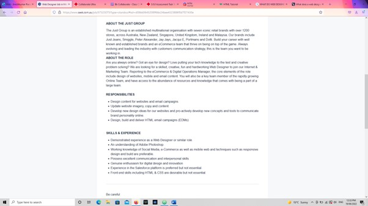

Born in India but been living in Australia since I was 10. Mainly we use my native language which is Gujarati at home but since I have been here since I was 10, feels like English is my first language. I currently work as Computer Technician (Hardware), in port Melbourne. Fun Fact about me is that I learnt French when I was in High School and got 2nd Prize in a French Speaking Comp.
My interest in IT started when I first got my laptop for school, I always wondered how these Machine Worked and how all different components came together to make a single computer work. When it comes to Repairing Laptops, I broke the Charging port in my laptop and when I saw how the Technician was fixing /repairing the Motherboard got me excited about getting my hands fixing laptops. After I passed year 11, I built my own PC and wanted always work with Computers since then.
I chose to come to RMIT because before I started working full time as Computer Technician, I was studying at RMIT (on campus), learning CERT IV in IT. As RMIT stands for Royal Melbourne Institution of Technology, I realized this could be the University where I start my IT Studies.
From studying Introduction to IT, I wish to learn the basic HTML, and learn how to get a westie up and running. As I want to be a Web Developer this is the perfect place to get new information and study how website is made.
My Ideal job is to work as web designer or web developer. I’m currently working as hardware engineer, but I want to change the field to Web Developer/designer. Where I get to play around with new web ideas and make it into reality. And it also gives flexibility on working from home and working at the office. This role requires minimum of 2-3 years of experience but saying there are some companies that require no experience but an understanding of the web tool they are using. This gives a fresh starter to the field a great opportunity to get some experience working with or under experienced Web Developers.

As shown in the picture above, the job position is Web Designer, and what makes this job more interesting to me is the responsibilities and skills required to do each job. Some skills required to do the job are: Understanding of Web Designing, Working knowledge of social media, e-commerce and mobile web design. On the other hand, with these skills the responsibilities are to Design concept for websites and email campaigns, update website imagery, copy and content, develop new design ideas for our websites and pro-activity develop new concepts and tools to communicate brand personality online, Design, build and deliver HTML email campaigns. The company also provides a great team to work in, which helps getting into new work easy.
My Myers-Briggs test result is PROTAGONIST. Which means people who are born leaders and ten to be vocal about their values, including authenticity and altruism. The result tests mean that I can help, lead and keep the team together. As protagonist I can help people keep motivated and do what’s right for them. When team is forming, I can be a great help when organizing team meetings, keeping notes and project together and lead the team in the Project. Learning Test results are that I learn easily by DOING IT (kinesthetic Learning), its where I learn quickly and pick up new information by doing it hands on experience with. With this learning skill, I’m confident to do the task hand on and learn very quickly from it. As visual IS my secondary learning style I can pick up information quickly by looking at it, when a team creates a chart or diagram with each member’s task and to-do list, I can clearly acknowledge my task.
Overview: A Portal where a service provider and many clients can come and lodge a ticket or complain about a technical issue, and the IT team can act on it accordingly. This can be useful in many industries like Bank, education department, transportation department.
Motivation: Each primary school, High School, universities require an IT team to have a service portal where Students, teachers and other staff Members can lodge a Service Request for their Laptops, Desktops or other Technological Issue. This Portal makes it easy for both parties to get the problem resolved easily.
Description: This Service Portal will help a Client and Company of Vendor to understand the problem easily. This type of portal is mainly used by the companies who are 3rd Party repair of Vendors. For example, if a high school or Primary school has a School IT Program (Laptops Purchased by a Vendor/s), and the 3rd party repairer Company Sets an IT Technician to do the repair for the school. Now with help of this Portal the company can add/remove as many Clients as they want. And with each client they can provide a tech to do the Repair. As there are different vendors for Laptops the Tech can also select which vendor the laptop is from. The tech then also put in notes on what’s the process with each job that is assigned to them. For example, they can add in what parts they have ordered or what they have done to repair that laptop so the school IT staff can see. The portal should be able to tell the Date each job/service ticket was raised with the staff/student’s name. It will also show what parts have been ordered for perticular job.
Tools and Technology: We can use software like ATOM to create an HTML format of the portal and get it running. To get the information on what the client and company want in the portal we can ask them or show some examples on what each part of the portal can do so they can get better idea on how the portal works.
Skills Required: To make the portal its better to understand how it’s going to be structured, using ATOM to write the HTML for it, need to identify the requirements of both parties and naturalize them so it’s easy for both to use. Writing the code will is the longest part of the project and that’s where the most skills will come in use. Understanding and creating the buttons like “Create”- which creates the job, “Add/Remove”- where clients can add or remove Jobs/service cases, “Submit”- After completing the job the tech can submit the report on what was done during that service, etc.… Another skill that is required to complete the project is to understand how easy is to navigate around the portal so it does not get confusing for any parties, using different colures and Font sizes is one way to help make it easier to use.
Outcome: If the project is completed successfully, it will help school IT Staff and Service Provider to create and communicate easily for their IT related problems. The most recent issue as tech personally I encounter is that I can not keep track of the parts I have received, but with this portal been able to add the ordered parts into the job, I can keep a record on what parts have been ordered and which job is waiting for parts.